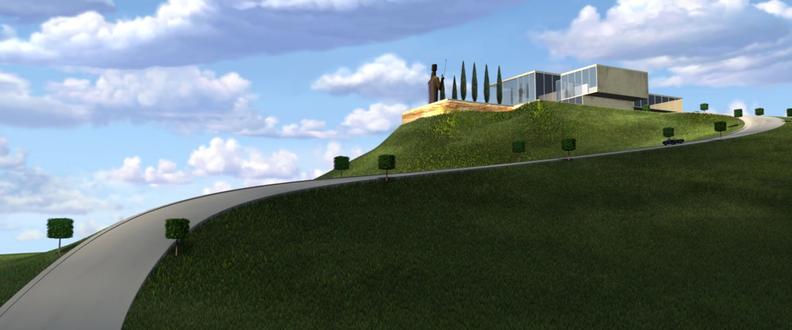
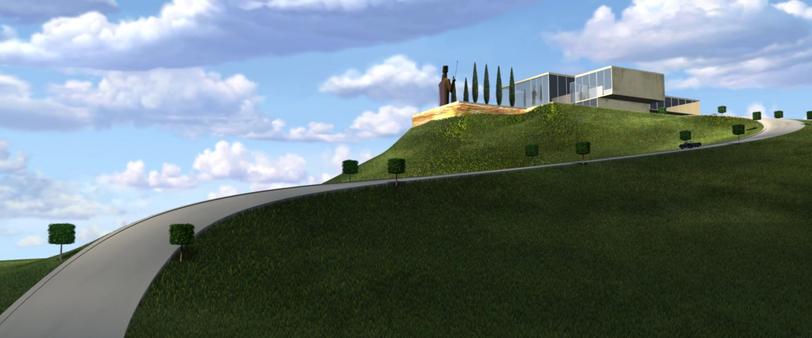

The Incredibles, a Pixar animation released in 2004, follows a family of superheroes who are forced to hide their powers and live a quiet suburban life. Throughout the movie, there are several references to 1960s mid century modernism through the film’s furniture and architecture.
The home of the Parr Family is a great example of the more domestic side of mid-century modern furniture of the time. The architecture of the house itself is inspired by the work of Joseph Eichler, a real estate developer known for developing distinctive residential subdivisions of mid-century modern style tract housing in California. The interior decor and furniture of the home also follow the more domestic side of mid-century modernism. Some well-known furniture that inspired the furniture in the Parr home included the Zanuso Lady Chair and the Flexsteel Sofa. The Zanuso Lady Chair by Marco Zanuso is the chair that Dash is hiding in while his sister, Violet, is sitting in a sofa inspired by the Flexsteel sofa when their parents are fighting late at night in the living room.
Another important home featured in the film was Edna Mode’s sleek and modern abode which represented the colder, more modern side of mid-century design at the time. Edna’s home featured immensely high ceilings, a set of black stairs without railings, and a massive circular fireplace surrounded by eight Le Corbusier inspired chairs. Many of the home’s sources of inspiration included Le Corbusier’s LC3 Grand Modele Arm Chair, a Japanese influenced sitting room, as well as the Swan Chair by Arne Jacobsen (for Fritz Hansen, 1957).
On the other end of the spectrum, there was Syndrome’s lair with its space age, Charles Deaton Sculpture House inspired exteriors. This retro-futuristic lair’s interior included a parting waterfall and a personal monorail, as well as references to Eero Saarinen’s walkways in the TWA flight center. Even in Syndrome’s jet on the way to his lair where Mirage and Mr. Incredible are discussing his mission, they reference Joe Colombo’s Elda Chair.
The Incredibles – Mid Century Modernism exemplified
"The Incredibles" Mid-Century Ideal
 
